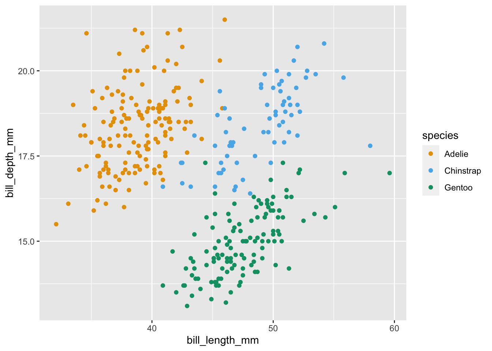

You can add alternative text to figures you create with code by adding the fig-alt chunk option, which works for Knitr, Jupyter, and Observable code chunks.
Here is an R/Knitr example.
```{r}#| label: penguins-plot#| warning: false#| fig-alt: |#| Scatterplot of penguin bill depth vs. length, colored by species.#| The relationship is positive for each of the three species.library(tidyverse)library(palmerpenguins)library(colorblindr)ggplot(penguins, aes(x = bill_length_mm, y = bill_depth_mm, color = species)) +geom_point() +scale_color_OkabeIto()```

The resulting HTML is shown below. This alternative (alt) text is accessible to screen readers.
<imgsrc="index_files/figure-html/penguins-plot-1.png"class="img-fluid"alt="Scatterplot of penguin bill depth vs. length, colored by species. The relationship is positive for each of the three species."width="672">